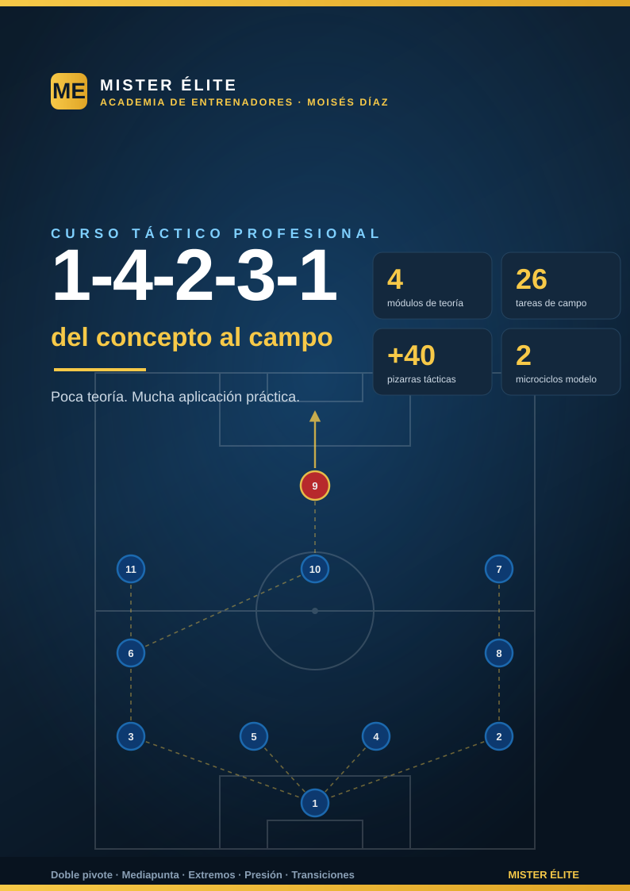

Sistema 1-4-2-3-1: del concepto al campo
MISTER ÉLITE — Moisés Díaz
Curso de formación táctica sobre uno de los sistemas más usados y enseñables del fútbol moderno: el 1-4-2-3-1. Filosofía del curso: poca teoría, mucha aplicación práctica. Cada idea se explica en lo justo y se baja al campo con una tarea concreta y una pizarra.
A quién va dirigido
Entrenadores y segundos entrenadores de fútbol formativo, amateur y senior que quieran:
- Entender el 1-4-2-3-1 como dos estructuras en una (muta sin balón y con balón) y no como un dibujo rígido.
- Disponer de un banco de 26 tareas listas para llevar al campo, con provocaciones medibles y coaching.
- Tener un material coherente de principio a fin: la misma nomenclatura, las mismas distancias y las mismas referencias en teoría y práctica.
No hace falta licencia previa: el lenguaje es claro y los conceptos se construyen de menos a más.
Objetivos del curso
- Comprender la estructura del 1-4-2-3-1: línea de 4, doble pivote, trivote y punta.
- Dominar la doble mutación: a 1-4-4-2 / 1-4-4-1-1 sin balón y a 1-2-3-5 / 1-4-3-3 con balón.
- Saber defender el sistema: bloques, gatillos de presión de la dupla 9+10, regla de oro del doble pivote y basculación.
- Saber atacar: salida en superioridad, la mediapunta entre líneas (zona 14), amplitud de extremos y laterales, y llegada de segunda línea.
- Entrenar las transiciones y el balón parado con los automatismos propios del sistema.
- Llevarlo todo al campo con un banco de tareas y dos microciclos de ejemplo.
Cómo está organizado
El curso tiene teoría breve (4 módulos) y práctica extensa (7 documentos de campo).
Teoría — modulos/
- Módulo 01 · Fundamentos y estructura
- Módulo 02 · Fase defensiva
- Módulo 03 · Fase ofensiva
- Módulo 04 · Transiciones y balón parado
Práctica — ejercicios/
- Plan de sesiones (2 microciclos)
- Bloque 1 · Salida con 2 centrales + doble pivote (T1–4)
- Bloque 2 · Doble pivote: relación 6/8 y mutación (T5–9)
- Bloque 3 · Pressing de la dupla 9+10 (T10–13)
- Bloque 4 · La mediapunta entre líneas / zona 14 (T14–18)
- Bloque 5 · Extremos, laterales y 9: amplitud y centros (T19–22)
- Bloque 6 · Transiciones y partido condicionado (T23–26)
Recursos — graficos/
Convención de dorsales y posiciones
Esta nomenclatura es única para todo el curso (teoría, ejercicios y pizarras).
| Dorsal | Posición | Abrev. | Matiz de rol |
|---|---|---|---|
| 1 | Portero | POR | Portero-líbero, inicia el juego, cobertura a la espalda de la defensa |
| 2 | Lateral derecho | LD | Defiende el carril derecho y se proyecta dando amplitud |
| 3 | Lateral izquierdo | LI | Defiende el carril izquierdo y se proyecta dando amplitud |
| 4 | Central derecho | DFC | Marca/cobertura; saca el balón por su lado |
| 5 | Central izquierdo | DFC | Marca/cobertura; saca el balón por su lado |
| 6 | Mediocentro defensivo (pivote) | MC | Ancla del doble pivote, protege a la defensa, primera salida |
| 8 | Mediocentro (box-to-box) | MC | El otro pivote: equilibrio, conducción y llegada |
| 7 | Extremo derecho | ED | Amplitud o pisar por dentro; repliega a ayudar al lateral |
| 10 | Mediapunta | MCO | El enganche: recibe entre líneas, crea y llega; cabeza del trivote |
| 11 | Extremo izquierdo | EI | Amplitud o pisar por dentro; repliega a ayudar al lateral |
| 9 | Delantero centro | DC | Referencia ofensiva: fija a los centrales, apoya y ataca el área |
Reglas de nomenclatura fijas: EI = extremo izquierdo, ED = extremo derecho (nunca "MI/MD"). El doble pivote son los MC 6 (ancla) y 8 (box-to-box); nunca saltan los dos a la vez en defensa. El trivote es ED 7 · MCO 10 · EI 11. En el plan de sesiones, MD = matchday (día de partido), nunca una posición.
Distancias de referencia (estándar único del curso)
| Concepto | Medida | Nota |
|---|---|---|
| Anchura entre defensas | 8–12 m | Nunca más de un pasillo de separación entre dos defensas |
| Separación del doble pivote (6 ↔ 8) | 8–15 m | Escalonados, nunca a la misma altura; uno cubre al otro |
| Pivote por delante de los centrales | 8–10 m | El ancla (6) se ofrece sobre la línea de centrales |
| La mediapunta (10) por delante del doble pivote | 10–15 m | En la franja entre la línea de medios y la defensa rival |
| Distancia entre líneas propias (en bloque) | 10–12 m | Sin balón, bloque medio/bajo: nunca más de 12 m |
| Distancia entre líneas (en construcción) | hasta 15 m | Con balón se busca más separación para líneas de pase |
| Longitud del bloque (última línea ↔ 9) | 30–35 m medio · 25–30 m bajo · hasta 40 m alto | Estándar: bloque medio = 30–35 m |
Leyenda de símbolos de las pizarras
| Símbolo | Significado |
|---|---|
| Círculo azul con número | Jugador propio (con su dorsal de la convención) |
| Círculo rojo | Jugador rival |
| Línea continua con flecha | Conducción / desplazamiento del jugador con balón |
| Línea discontinua con flecha | Pase del balón |
| Línea de puntos | Desmarque / movimiento sin balón |
| Línea roja de corte | Bloqueo / corte real de una línea de pase |
| Números 1 · 2 · 3 | Secuencia ordenada de una jugada |
| Conos / puertas | Mini-porterías, zonas o puertas-meta de la tarea |
| Franjas y carriles | Zonas o pasillos que condicionan la tarea |
Todas las pizarras se leen atacando hacia arriba: el fondo propio está abajo y la portería rival arriba. Cada pizarra lleva al pie la marca MISTER ÉLITE — Moisés Díaz.
Glosario rápido
- Doble pivote: la pareja de mediocentros (6 + 8) por delante de la defensa. Corazón del sistema.
- Trivote: la línea de 3 por detrás del 9 (ED 7 · MCO 10 · EI 11).
- Zona 14: franja central justo delante del área rival; la zona de máxima generación de ocasiones, dominio de la mediapunta.
- Mutación: cambio de forma según la fase. Sin balón → 1-4-4-2 / 1-4-4-1-1; con balón → 1-2-3-5 / 1-4-3-3.
- Salida en 3: un pivote (normalmente el 6) baja entre o junto a los centrales para construir en superioridad ante la presión.
- Gatillo (trigger): señal que activa el pressing (p. ej. pase del rival a su lateral → salta el extremo).
- Curva de presión: trayectoria curvada del presionador para tapar una línea de pase mientras aprieta al portador.
- Desdoblamiento: el lateral sube por fuera cuando el extremo pisa por dentro (o viceversa) para generar 2v1.
- Tercer hombre: A pasa a B (de espaldas/marcado), B deja a C que aparece de cara; rompe marcajes orientados.
- Resto de pérdida (resto defensivo): jugadores equilibrados por detrás del balón que permiten contrapresionar o replegar con orden.
- Half-space / pasillo interior: carriles entre la banda y el centro; zona de llegada de 10 y 8.
- Lado fuerte / lado débil: el lado donde está el balón (se densifica) y el contrario (se cubre por dentro).
Curso "Sistema 1-4-2-3-1: del concepto al campo" · MISTER ÉLITE — Moisés Díaz · Filosofía: poca teoría, mucha aplicación práctica.